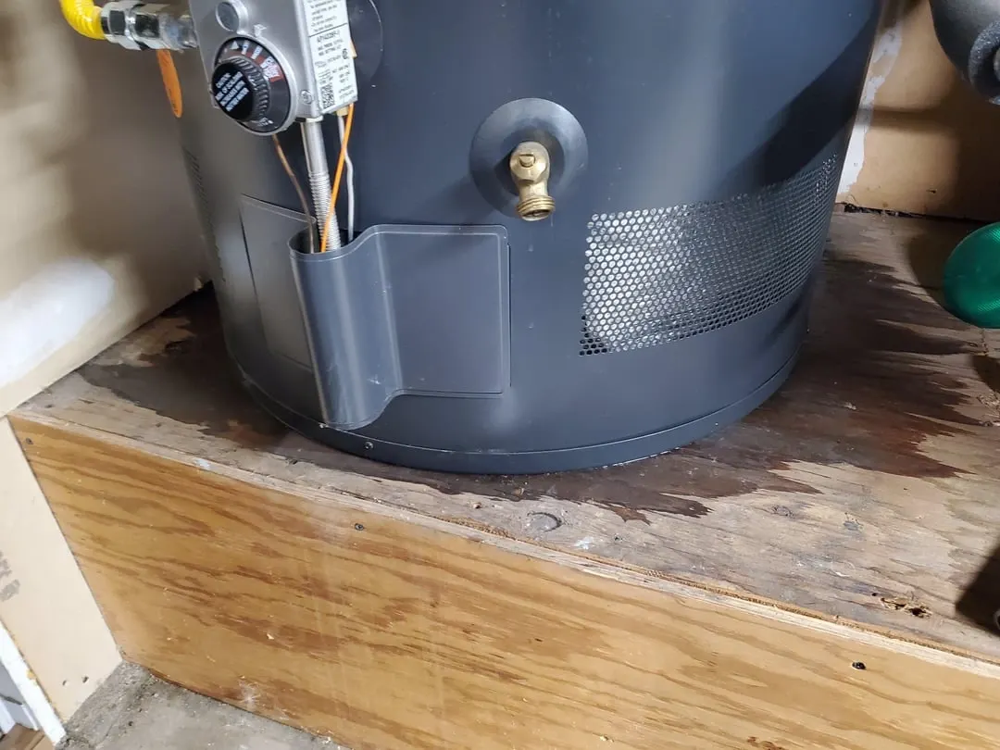

Common Causes of a Leaking Water Heater in Nampa
- Tank Corrosion (Internal Rust-Through) — The most serious cause. Once the steel tank itself corrodes and leaks, the tank cannot be repaired—only replaced. Nampa's hard water accelerates anode rod depletion, which speeds up this process once the rod is used up.
- Pressure Relief Valve (T&P Valve) Discharge — This safety valve releases water when internal pressure or temperature exceeds safe limits. A failed or worn valve can leak even under normal conditions. This is a repairable, inexpensive fix.
- Loose Water Connections — Fittings at the cold water inlet, hot water outlet, or drain valve can loosen over time or develop mineral deposits that prevent a tight seal. Usually a quick, low-cost repair.
- Condensation — On gas water heaters, condensation can form on the tank exterior during initial fill or with a new cold water supply, and can be mistaken for a leak. This typically resolves on its own within a day.
- Drain Valve Failure — The plastic drain valve at the tank's base can crack or fail to seal properly, especially on older units.
- Excess Pressure from a Failed Expansion Tank — If your home has a closed plumbing system (check valve or pressure regulator), a failed expansion tank can cause excess pressure that forces the T&P valve to discharge repeatedly.

Safe Homeowner Diagnostic Checks
- Locate the source first. Dry off the tank and surrounding connections with a towel, then check every 15–20 minutes to see where water reappears first.
- Check the T&P valve discharge pipe. If water is coming from the pipe extending down the side of the tank, the pressure relief valve may be releasing water due to excess pressure or temperature—or the valve itself may be worn out.
- Inspect all visible fittings. Look at the cold water inlet, hot water outlet, and drain valve at the bottom of the tank for visible moisture or mineral crust (a sign of a slow, ongoing leak).
- Look for rust-colored water. Rust-tinted water pooling under the tank strongly suggests internal tank corrosion—not a fitting issue.
- Check the floor drain pan (if present). Many Nampa homes have water heaters installed with a catch pan and drain line. Water in this pan confirms an active leak somewhere above.
When to Call a Professional Immediately
- Water is leaking directly from the tank body itself (not a fitting or valve)
- You see active water pooling and don't know the source
- The leak is near electrical components on an electric water heater
- The T&P valve is discharging continuously or repeatedly
- You notice rust-colored water, which indicates internal corrosion
- The leak is causing water damage to floors, walls, or belongings
Shut off the water supply and power/gas to the unit before we arrive if you suspect an active leak from the tank itself.
Cost Context for Water Heater Leak Repairs
| Repair Type | Typical Cost Range |
|---|---|
| Loose fitting / connection tightening | $100 – $180 |
| T&P valve replacement | $150 – $250 |
| Drain valve replacement | $120 – $200 |
| Expansion tank replacement | $200 – $400 |
| Full water heater replacement (tank corrosion) | $1,300 – $2,500 |

Water Heater Leaking FAQs
Water heater repair costs in Nampa, ID typically range from $150 to $600 depending on the issue. A leak from a loose fitting might cost $120–$180 to fix, while a leak from tank corrosion usually means replacement is needed since a corroded tank cannot be repaired.
No. Many leaks come from loose water connections, a failing pressure relief valve, or condensation—all repairable without replacing the unit. However, if water is leaking directly from the tank body itself (not a fitting or valve), that indicates internal corrosion and the tank cannot be repaired; replacement is necessary.
If your unit is under 7 years old and the leak is from a fitting, valve, or connection (not the tank itself), repair is almost always worth it and inexpensive. If the leak is from the tank body on a unit over 8–10 years old, replacement is the better value.
Yes. If you notice active leaking, shut off the water supply to the unit and, for electric units, switch off the breaker (or turn the gas control to pilot/off for gas units). This prevents further water damage and, in the case of electrical components getting wet, reduces safety risk. Then call a professional for diagnosis.